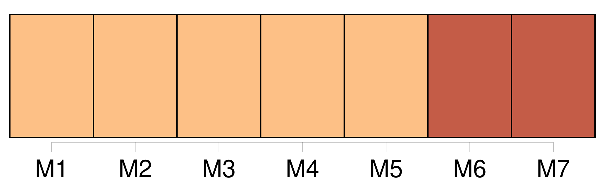
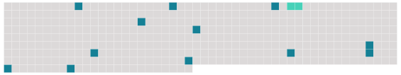

Longueur nb maillons : 13 mentions |
 |
Je serais bien en peine de le dire ; [nous] n'avons pas de conversations suivies. C'est, entre [nous] , la plupart du temps des propos se rapportant à Paris que [nous] regrettons [toutes deux] [2 phrases]
Tout cela coupé de silences qui [nous] permettent de nous réjouir du babillage de Clémence et du petit Jean, du gazouillis infiniment léger de la petite Reine, du chant des oiseaux dans les branches du noyer, et enfin, des bruits de toutes sortes que font dans la campagne les hommes et les bêtes. Et puis, pour occuper [nos] silences, il y a aussi le coteau d'en face. [4 phrases] Ce moulin change de forme selon que le temps est clair ou couvert et toujours il attire [notre] attention. Lorsque par temps gris il est au repos, il devient pour [nous] un cerf en péril venant de gravir précipitamment la côte, et arrêté net devant l'étendue du plateau.
De ce cerf, [on] ne voit que le haut du corps, mais [on] le devine tout frémissant de crainte devant cet espace découvert qu'il lui faut franchir plus vite. Par grand vent, le moulin a toute [notre] pitié tant ses gestes désordonnés semblent appeler au secours.
Mais lorsque par vent doux, il ouvre toutes grandes ses ailes blanches au soleil, [nous] ne le perdons pas de vue, [nous] attendant toujours à le voir quitter la terre dans une envolée pleine d'orgueil. |
 |
Il est possible de télécharger la ressource sur la page Ortolang |
Si vous avez des questions ou vous voyez des erreurs, merci d'envoyer un mail à silvia.federzoni89@gmail.com |